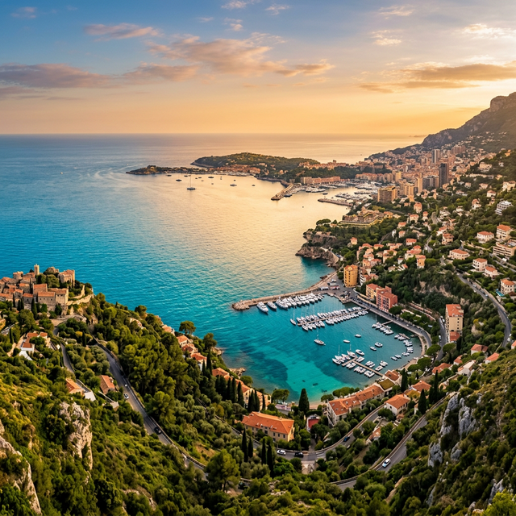
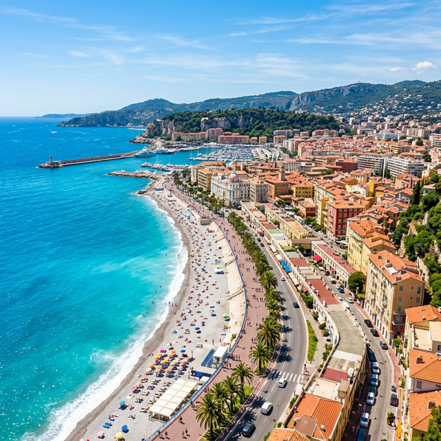
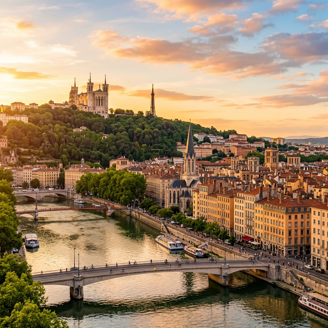
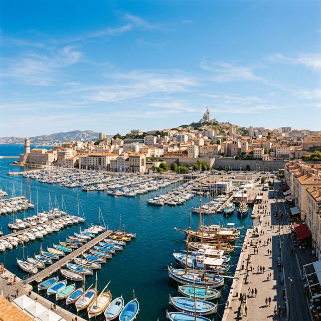
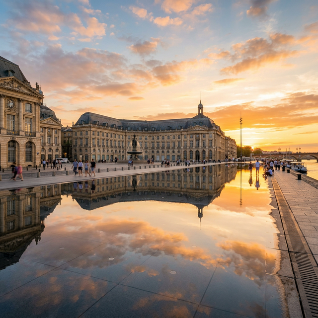
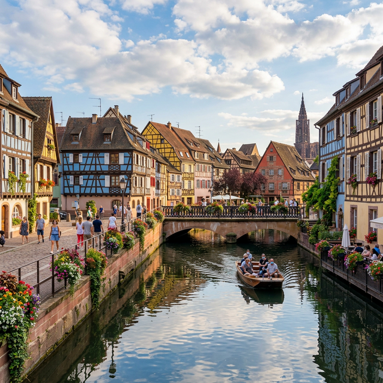

✦ France Beyond Paris
Five magnificent cities, each with its own soul and story

Côte d'Azur
"The Queen of the French Riviera"
Nestled between the Mediterranean Sea and the foothills of the Alps, Nice enchants visitors with its stunning azure waters, vibrant markets, and belle-époque architecture. It's a city where art, nature, and the art of living beautifully converge.

Gastronomic Capital
"The Culinary Heart of France"
Lyon, a UNESCO World Heritage city, is where history, gastronomy, and innovation intertwine. With its traboules (hidden passageways), silk-weaving heritage, and legendary bouchons, Lyon offers an authentic French experience unlike any other.

Mediterranean Port City
"France's Gateway to the Mediterranean"
As France's oldest and most multicultural city, Marseille pulses with an energy that's both ancient and refreshingly modern. From the dramatic Calanques coastline to the bustling Vieux-Port fish market, this is a city that engages all the senses.

Wine Capital of the World
"Where Wine and Elegance Flow Together"
Bordeaux is synonymous with exceptional wine, but this elegant city offers so much more. Its perfectly preserved 18th-century architecture earned it UNESCO World Heritage status, while the modern Cité du Vin puts it at the forefront of wine culture tourism.

Franco-German Heritage
"A Fairytale at the Crossroads of Europe"
Strasbourg is where France and Germany embrace in a charming cultural fusion. Its iconic Petite France district, with half-timbered houses reflected in canals, feels like stepping into a storybook. As the seat of the European Parliament, it represents the heart of European unity.